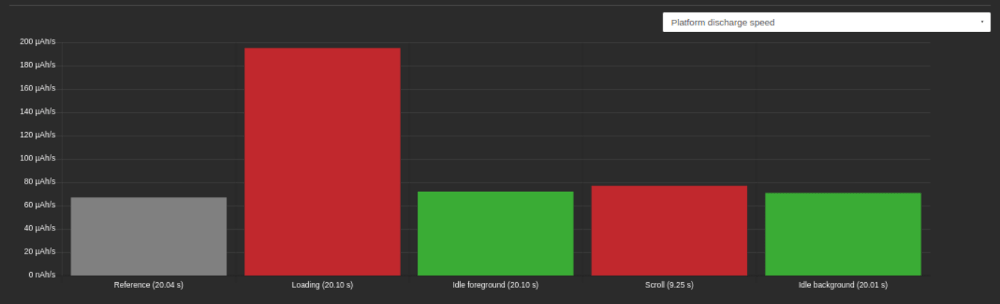
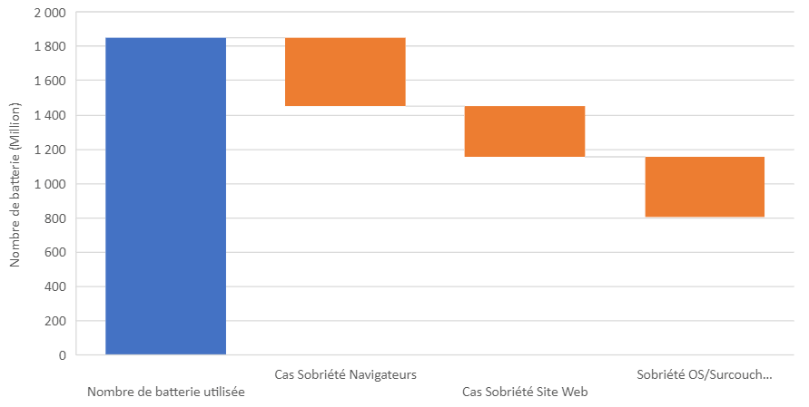

This article was written in 2021. Since then, our research has led us to revise the environmental impacts mentioned here. For example, we now consider the manufacturing footprint of a smartphone to be 52 kg CO2e. However, the approach presented remains entirely valid.
Introduction
The lifespan of a smartphone averages 33 months. Knowing that a smartphone contains more than 60 materials, including rare earth elements and that its carbon footprint is between 27 and 38 kg eqCO2, the current rate of replacement of smartphones is too fast.
Different reasons can explain this rate of renewal. Loss of autonomy and battery problems are the main reasons (smartphone: one in three changes due to the battery). Increasing the capacity of the batteries is a solution that seems interesting but it would not solve the problem. Indeed, the data exchanged continues to increase and this has an impact on the power of smartphones. Websites are still just as heavy as before, even becoming heavier and heavier… So is this an unsolvable problem? What is the link between the autonomy that we experience in a personal capacity and this observation on the impact of digital technology?
Methodology
We started our analysis through web consumption. Indeed, mobile users spend an average of 4.2 hours per day browsing the web.
In a previous study on the impact of Android web browsers, we measured the consumption of 7 different websites on several web browsing applications from a mid-range smartphone, a Samsung Galaxy S7. This allows us to project this consumption onto global consumption and to apply optimization assumptions to identify room for maneuver.
Even if the uncertainties are high (diversity of mobile, diversity of use, etc.), this action allows us to identify the room for maneuver to improve the life cycle of smartphones. The choice of the Galaxy S7 makes it possible to have a smartphone close (within 1 year) to the average age of global smartphones (18 months).
What is the annual consumption of web browsing on mobile?
Here are our initial assumptions:
- 4.2 hours of web browsing on average.
- 4.66 billion mobile users
- The different market shares of browsers and their distribution (for example 64.5% Chrome, etc.)
- Safari consumption equal to the lowest consumption of Android browsers (positive hypothesis)
- An equal distribution of the market shares of alternative browsers
- Study of the power consumption of 7 websites on 16 browsers on a mid-range phone.
The estimated annual consumption of smartphones is 2,774 billion ampere-hours. Not very tangible? Considering that an average 3000mAh battery can go through 500 full charge/discharge cycles before it starts to be unusable and that 1,850 million batteries are used each year to browse the web. Does this figure seem exaggerated to you? There are 5.66 billion smartphones in the world, this would correspond to a problem that would affect 36% of the global fleet each year. If we consider that 39% of users will change their smartphone for battery reasons and only 26% of users will replace the batteries if they wear out, we get the figure of 1,200 million batteries, which corroborates our figures. Not inconsistent at the end, when you look at the phone and battery renewal cycles.
Would reducing the consumption of browsers have an impact?
Web browsers are important engines in the consumption of the web. Our measurements show significant differences in power consumption between browsers. These differences are explained by heterogeneous implementations and performance. In the following graph, the consumption of browsing on 7 sites, including the launch of the browser, the use of features such as writing URLs, and the navigation itself is visualized.

We start with a hypothesis of publishers optimizing browsers. By considering a hypothetical consumption of all browsers equal to that of the soberest (Firefox Focus), we obtain a reduction in the total annual consumption which makes it possible, with the same assumptions on the lifespan, to save 400 million batteries per year. Knowing that 1,500 million smartphones are sold per year, taking the same assumptions as before on replacement and repair rates, this would save 7% of the fleet of phones sold each year.
Would reducing the consumption of sites have an impact?
It is also possible that the websites are much soberer. We have assumed a consumption close to that of Wikipedia. From our point of view, having audited and measured many sites is possible but by taking important actions: optimization of functionalities, reduction of advertising and tracking, technical optimization …

Here is an example of the representation of the energy consumption of the Team website. We see that the load will consume up to 3 times the reference consumption. The optimization margin is enormous in this precise case, knowing that many sites arrive at a factor of less than x2.
In the case of sober websites, by taking the same assumptions and calculation methods as for the sobriety of browsers, we could save 294 million batteries per year, or reduce the renewal of the fleet annually by 5%.
Is reducing the consumption of the OS possible and would have an impact?
The question about the impact of hardware and OS often arises. To take this impact into account, we have several data at our disposal. An important piece of data is the benchmark consumption of the smartphone. It is the consumption of the hardware and the OS. For the Galaxy S7, this consumption is 50µAh / s.
By taking the same assumptions as those taken to calculate the total consumption (2,774 billion Ah), the annual consumption attributed to the material and OS share would be 1,268 billion ampere-hours or 45% of the total consumption.
So is this the glass tray of optimization? Not really because there is a lot of space for optimization: Android itself for example. We have carried out an experiment that shows that it is possible to significantly reduce the consumption of Android functionalities. The builders’ overlays are also a way to reduce consumption.
Based on our experience, we estimate that a 5% reduction in consumption is totally possible. This would save 350 million batteries or 6% of the fleet.
What environmental gains can we hope for?

Applying digital sobriety at different levels would reduce the global number of used batteries per year by more than half.
Even on the assumption that users do not systematically renew their smartphones for reasons of loss of autonomy or only replace their used battery, the annual smartphone renewal could be reduced by 17%.
In the best-case scenario, assuming that most users will replace their batteries, the potential savings would be 2 million TCO2eq. But the gains could be much greater if you consider that replacement practices are not changing fast enough and that users are changing smartphones rather than batteries: 47 million TeqCO2.
By being optimistic about an increase in battery capacity, no increase in the impact of software, and an unincreased impact of the larger batteries, the number of batteries used could be halved, in the same way, the environmental impact by two. But is it still enough? Rather go for an increase in the capacity of the batteries and a decrease in energy consumption and then obtain a gain of 4 on the impact by multiplying the capacity by two!
Energy on a smartphone, small drops but a huge impact in the end
We are under the impression that the energy is unlimited, we just need to charge our smartphone. However, even if the energy was unlimited and without impact, the batteries are consumables. The more we use them, the more we wear them out, and the more we use non-renewable resources such as rare earth elements, not to mention other environmental, social, and geopolitical costs. We can expect technological developments to improve capacity and improve battery replaceability, but the savings are huge. Replacing the batteries is not the miracle solution because even if we extend the life of the smartphone, the battery must be thrown away or recycled, and recycling of Lithium is not yet assured (P.57). Gigantic because we use our smartphones for many hours. Gigantic because we are billions of users.
The exercise that we have carried out is totally forward-looking; all browser editors should integrate sobriety, all sites be eco-designed. It does show, however, that optimizing the energy of apps and websites makes sense in the digital environmental footprint. Some people seeing only the energy of recharging neglect this aspect. However, as we can see in this projection, the environmental gains are much greater.
This figure is significant and at the same time low: 47 million Teq CO2 for the world, this is 6% of the French footprint. However, CO2 is not the only metric to look at. Another significant problem, for example, the shortage of lithium in 2025 but also water.
To all this, we should add issues associated with new practices and new materials:
… the sector is constantly evolving to respond to challenges that are sometimes commercial, sometimes economic, sometimes regulatory. The battery example illustrates this trend well. While we had become familiar with the « classic » lithium-ion batteries which mainly contain lithium, carbon, fluorine, phosphorus, cobalt, manganese, and aluminum, new models have appeared, first lithium-ion-polymer batteries then lithium-metal-polymer batteries. The possible metal procession, already substantial, has therefore been considerably increased; with iron, vanadium, manganese, nickel but also rare earth elements (cerium, lanthanum, neodymium, and praseodymium).
SystExt Association (Extractive Systems and Environments) https://www.systext.org/node/968
Taking into account the environmental, social, and geopolitical issues involved with batteries, dividing the number of batteries used by 2 is really not enough! This means that the optimization wells should now be activated. And if we want to achieve ambitious goals, all players, manufacturers, OS and browser editors, digital players … have their share of the work. Continue to incant magical reductions resulting from technologies, to say that energy should not be optimized, to transfer the fault to other actors or other sectors, to explain that focusing on uses is a mistake … that shift the problem. We all need to roll up our sleeves and solve the problem now!